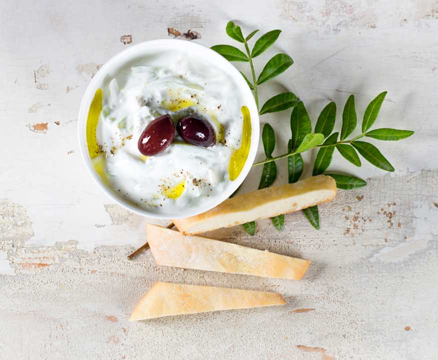

Tzatziki
Von
Cookidoo
Portionen:
8 Portionen
Zubereitungszeit:
20 Minuten
Zutaten
400 g Salatgurke, geschält, in Stücken
1½ TL Salz
3–4 Knoblauchzehen, nach Geschmack
400 g griechischer Joghurt (10% Fett)
2 EL Sauerrahm
¼ TL schwarzer Pfeffer, gemahlen
1 Glas schwarze Oliven, zum Dekorieren
1 EL Olivenöl, zum Beträufeln
Zubereitung
Die Gurkenstücke mit 1 TL Salz im Mixtopf 3 Sek./Stufe 5 klein hacken. Alles in den Gareinsatz geben und rund 10 Minuten Wasser ziehen lassen. Anschließend die Gurke portionsweise mit den Händen gut ausdrücken und beiseitestellen.
Die Knoblauchzehen im Mixtopf 3 Sek./Stufe 7 fein hacken.
Was an der Wand hängt, mit dem Spatel nach unten schieben. Im Mixtopf erneut 3 Sek./Stufe 5 zerkleinern.
Joghurt, Sauerrahm, ½ TL Salz und Pfeffer zum Knoblauch geben und im Mixtopf 15 Sek./Stufe 3,5 cremig rühren.
Die ausgedrückte Gurke zugeben, im Mixtopf 5 Sek./Linkslauf/Stufe 3,5 unterrühren und abschmecken. In eine Schüssel füllen, mit Oliven garnieren, mit etwas Olivenöl beträufeln und servieren.
Bring! Einkaufsliste App für iPhone und Android